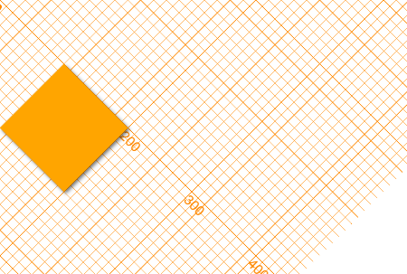
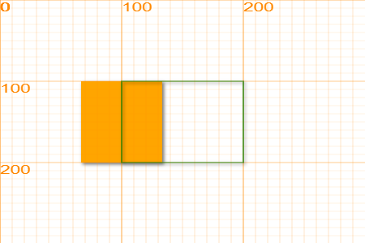

画布¶
canvas是H5的一个模块，用于绘制图像。在LeapJS中，所有绘制相关的功能都是基于canvas开发的。除了2d项目，canvas还支持3d绘制，不在我们的讨论范围内。
属性速查¶
| 属性 | 作用 |
|---|---|
| canvas.width | 获取或者设置画布的宽度 |
| canvas.height | 获取或者设置画布的高度 |
方法速查¶
| 方法 | 作用 |
|---|---|
| canvas.clear() | 清理画布上所有的内容 |
| canvas.showAxis() | 显示画布坐标 |
| canvas.resize(w, h) | 改变画布的宽度和高度 |
| canvas.shadow(false) | 设置是否开启全局阴影 |
| canvas.rotate(degree) | 旋转画布内坐标 |
| canvas.scale(w, h) | 缩放画布内坐标 |
| canvas._translate(x, y) | 平移画布内坐标 |
| canvas.getContext("2d") | 返回ctx，详见context一章 |
属性¶
宽度 width¶
获取或者设置画布的宽度，默认情况下，画布的宽度为450
高度 height¶
返回或者设置画布的高度，默认情况下，画布的高度为550
绘制背景时，我们可以利用这两个属性，来让图片铺满整个画布。
var bg = new Sprite("....jpg", 0, 0, canvas.width, canvas.height);
bg.draw();
利用画布宽度和高度来判断物体是否移到屏幕外
if(role.x < 0 || role.x > canvas.width) // role is out of the canvas
设置高度和宽度
建议使用resize方法来改变画布的大小，使用属性改变画布会丢失已经初始化的画布属性
方法¶
显示坐标轴 showAxis¶
canvas.showAxis()
canvas.showAxis();
显示画布的坐标轴，显示的宽度为画布宽度 * 2，显示的高度为画布高度 * 2，中心点为原点。默认情况下，我们只能看到右下区间的坐标轴。当我们移动坐标系时，我们可以看到不同位置的坐标轴。
重置画布 resize(width, height)¶
canvas.width = width || 450 // borders size
canvas.height = height || 600 // p, height
ctx.fillStyle = ctx.strokeStyle = 'orange';
// 设置文字默认对齐方式：顶部对齐
ctx.textBaseline = 'top'
// 设置默认阴影
ctx.shadowBlur = 5;
ctx.shadowOffsetX = 2;
ctx.shadowOffsetY = 2;
ctx.shadowOpen = true;
重置画布时，画布上的所有内容都会消失，画笔的属性也会被重置，所以一般只在最初状态下进行画布的重置。
形变 transform¶
画布的形变是由Transform类来记录的，通过改变transform属性值，可以直接对canvas的形变属性进行操作。
canvas.transform = new Transform()
一般情况下，通过下面的方法对画布进行形变。
旋转 rotate¶
canvas.rotate (degree)
将画布围绕原点顺势正旋转一定的角度，角度单位为（°），这里degree表示以初始坐标为参考。多次使用rotate，以最后一次为准。
canvas.rotate(45);
canvas.showAxis();
rectangle(100, 0, 100, 100);
当画布旋转后，画布上的所有元素都会随之转动。可以看到，原来的正方形已经跟着画布旋转了45度。

缩放 scale¶
canvas.scale(w, h)
将画布以原点为锚点，对坐标系进行缩放，默认情况下w为1，h为1。
rectangle(100, 100, 100, 100);
canvas.scale(1.5, 1);
canvas.showAxis();
fill(false);
rectangle(100, 100, 100, 100, "green");
可以看到，将x坐标进行放大后，原来的正方形变为了长方形，图形上的所有点的x坐标都被拉长了

平移 translate¶
canvas._translate (x, y)
canvas._translate(100, 100);
canvas.showAxis();
fill(false);
rectangle(100, 0, 100, 100, "green");
平移将整个坐标系往x、y方向进行呢移动。注意，这个方法名前面使用了下划线_translate，这是因为translate已经被浏览器占用了。
例子：震动效果
每次点击画布，都可以让画布上的所有内容震动
画布的形变和图形的形变¶
画布的形变和图形的形变有相同点也有不同点，在不同时候我们需要选择合适的形变来达到我们的目的。